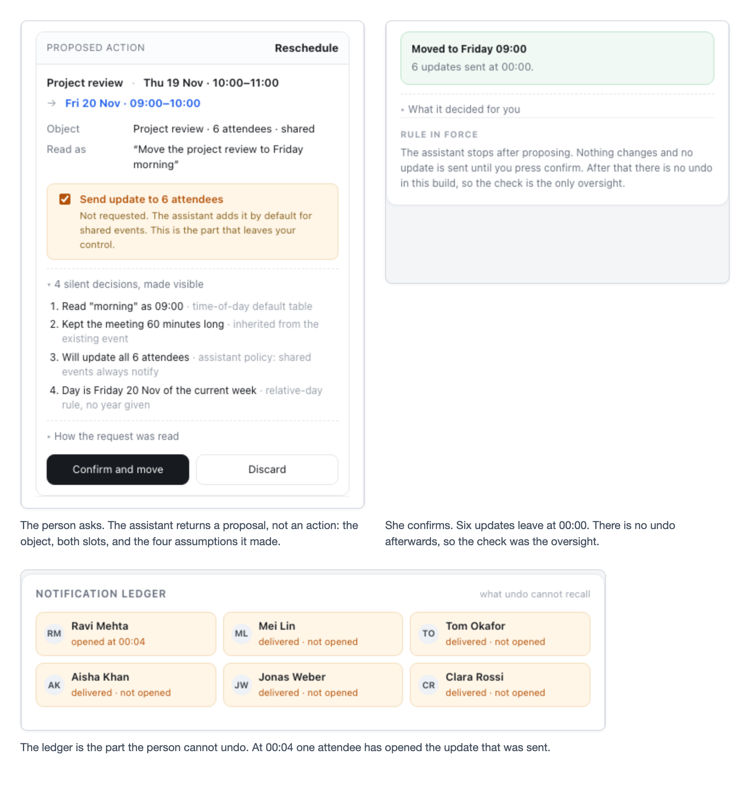
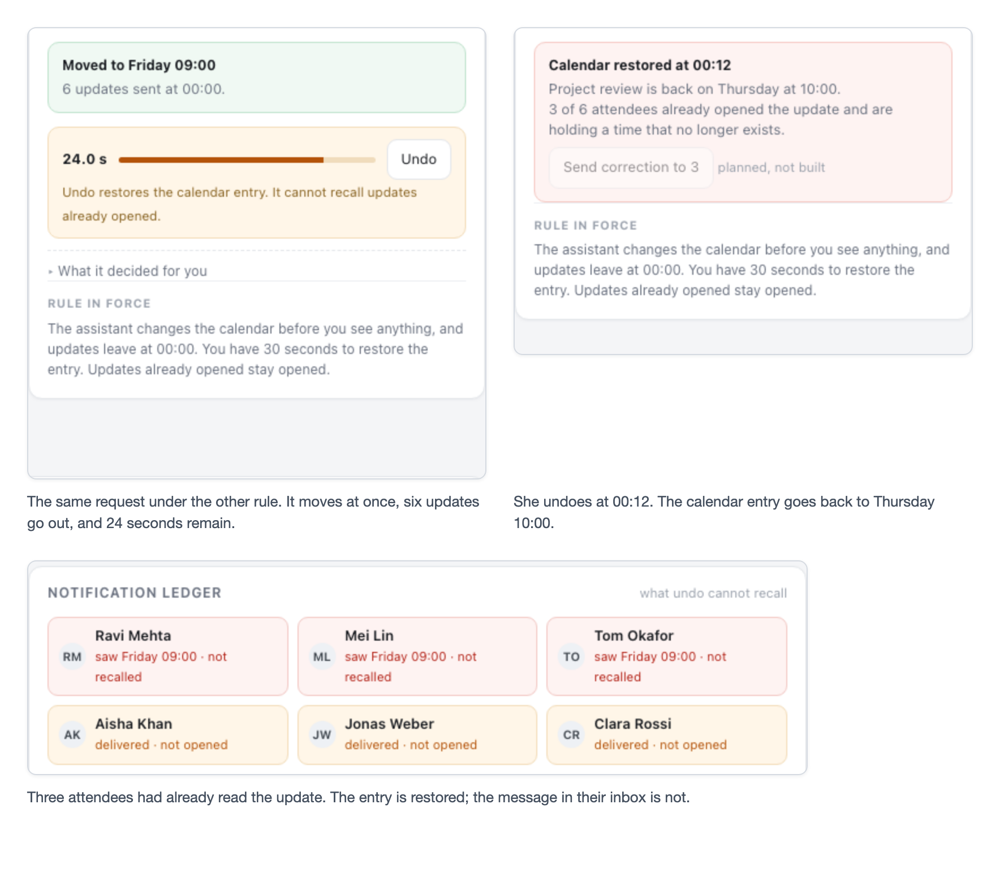
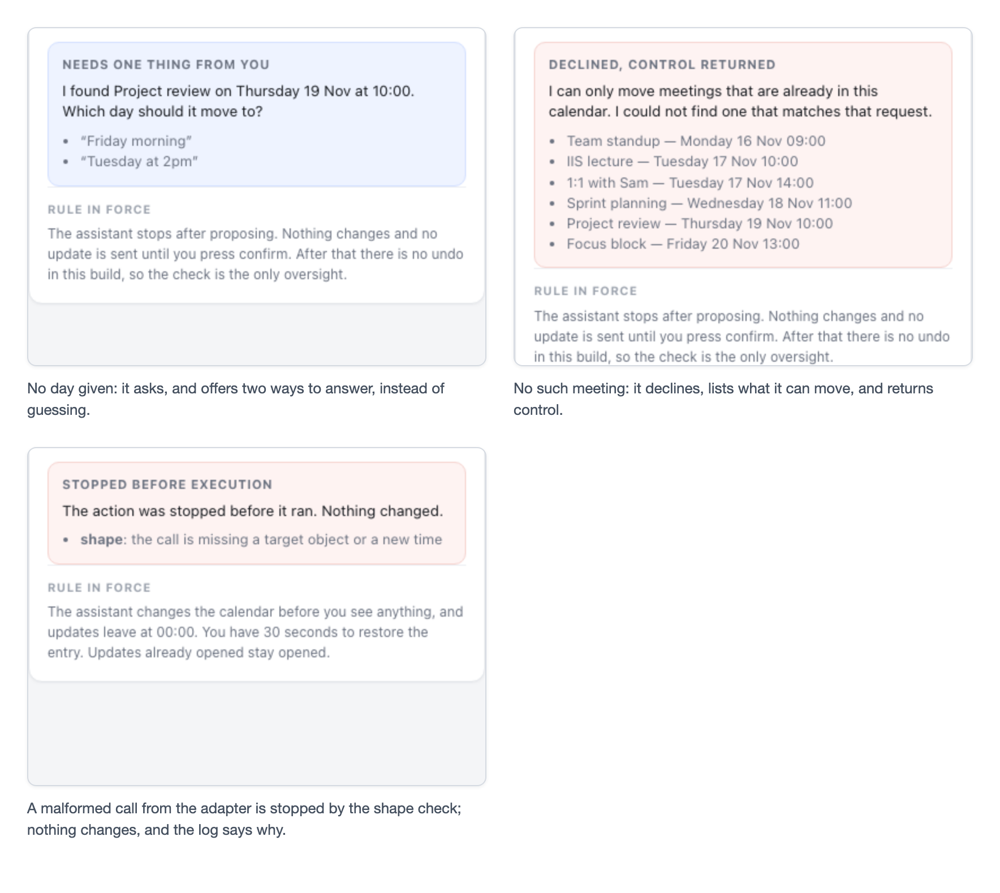

Area 2: Agentic interaction and human oversight
Word count: 1,281 (main 1,080 + abstract 201)
When an AI assistant reschedules a shared meeting it changes plans for people who never approved the change. Asking first lets the organiser inspect the change but interrupts them. Undoing afterwards avoids the interruption, but the mistake is then found after attendees have read a time that no longer exists, and restoring a calendar entry does not recall a message already opened. Assignment 1 identified that asymmetry and proposed a study; this project builds the situation instead. A working prototype runs one request under two oversight rules — confirm before acting, and act with a thirty-second undo — against a simulated six-person meeting. The assistant parses the request into a proposal, shows the four assumptions behind it, runs five checks before touching the calendar, and records what each attendee has seen. Undoing at twelve seconds restores the entry and leaves three attendees holding a time that has gone. The interaction, the checks, the ledger and the undo window are implemented; the calendar service, the attendees and the model are simulated; a correction message is planned. The prototype does not measure whether undo reduces oversight effort. It makes the consequence of that choice inspectable, which is what the study would then have to measure.
Assignment 1 proposed a laboratory comparison of pre-action approval and post-action undo. Four days and no participants cannot produce it honestly, so the project changed shape: instead of measuring the difference it instantiates both rules on one task, so the asymmetry can be seen rather than argued. One chain is built end to end — typed request, proposal, five checks, executed change, notification ledger, then either a confirmation or a thirty-second undo. Under confirm, nothing happens until the person approves and there is no undo afterwards; under undo, the calendar and six updates change at once, and thirty seconds remain to restore the entry. The calendar service, attendees, delivery and model are simulated; the parser, checks, engine and undo window are real code; a correction message is planned and marked. Figure 1 shows the components and their status.
Making the two rules a switch rather than a setting is the central choice. Horvitz (1999) frames acting and asking as a decision under uncertainty about attention and the cost of a wrong action, and Shneiderman’s framework keeps automation and human control separate rather than trading one for the other. Neither settles what to do when the cost falls on someone outside the dialogue, and a single-rule artefact could not show it. Two rules on one task let an identical request produce both consequences within a minute.
The notification side effect is on by default, marked “not requested” and editable, because the part that escapes control is a policy default, not a decision the person made. Amershi et al. (2019, G11) ask systems to explain why they acted; here the explanation is a list of who has read what. The course’s reversibility-by-visibility distinction (Lecture 12, after Shneiderman, 1983) sets the rule — reversible and visible, do it and show it; irreversible and invisible, confirm — and the ledger is how visibility survives the action.
Assignment 1’s sources still frame the choice. Zhou et al. (2026) price a late check as rework inside the task; Cranshaw et al. (2017) and Endacott (2024) show the cost landing outside the task, on invitees and on the organiser’s sense of control; Haggard (2017) explains why restoring an entry does not restore the feeling of having acted. The prototype puts all three on one screen: the rework is the timer, the outside cost is the ledger, the agency is the sentence that three attendees now hold a time that has gone. Assignment 1 feedback asked for tighter source-to-claim links, so each row carries one source.
Thirty seconds trades one error for another, and Lecture 04’s signal-detection framing applies: the window does not improve how well the system knows the move is right, only how the two costs are balanced.
The proposal reports four assumptions and no score. A number would look calibrated and would not be; four lines the person can check — “morning is 09:00”, “duration kept”, “attendees notified”, “Friday of this week” — are what Lecture 09 calls a specification in which every omitted part becomes a silent decision. Showing them before the action answers Lecture 02’s claim that every inference is a bet.
Five checks — shape, permission, precondition, confirmation, idempotency — run before anything executes, and the result panel is built from the ledger rather than from the assistant’s summary. Lecture 12 separates the model’s proposal from the system’s decision: here the model cannot execute anything, and “done” appears only once the service has said so.
| Design choice | Why it suits the problem | Supporting evidence | Status |
|---|---|---|---|
| Two oversight rules as a switch | One person must feel both rules on one task | Horvitz (1999); Shneiderman (2022) | implemented |
| Thirty-second undo window | Long enough to notice, short enough to matter | Nielsen (1993); A1 gap | implemented |
| Notify on by default, marked unrequested | The cost is a default, not a user decision | Amershi et al. (2019) G11 | implemented |
| Assumptions, no confidence score | A score cannot be checked; an assumption can | Lecture 09; Lecture 02 | implemented |
| Five checks before execution | A well-formed call can still be wrong | Saltzer & Schroeder (1975) | implemented |
| Correction message after an undo | Repair is the work undo shifts, not removes | A1 gap; Cranshaw et al. (2017) | planned |
The figures follow three runs of one request. In Figure 2 the person reviews the proposal and confirms; the updates leave and the ledger shows who has read them. In Figure 3 the same request runs under the undo rule: change and updates happen immediately, and the person undoes at twelve seconds. The entry returns; three attendees keep a time that no longer exists. Figure 4 shows the repair turns — given no day it asks, given an unknown meeting it declines and lists what it can move, given a malformed call it stops.



The build changed three times in ways that matter. The scope moved from a study to a prototype — the compromise this report defends. A replay bug stamped every notification open at the moment of capture, so undo looked simultaneous with reading; opens now record their scheduled time. The result card hard-coded “morning”, so a 2 pm request produced a sentence about a different request; the action now carries its own assumptions. A test then showed the undo window reported as open in confirm mode, which the interface never offered but the engine allowed. Twelve fixed cases run after every change (node tests/run.mjs), and eight states are reachable as ?scene= links, which is how the figures were made. An AI assistant drafted the code and the prose; I read each diff, ran the cases and loaded every scene, and the README records the same account.
The compromise is worth stating plainly. Nothing here measures oversight effort, felt control, or whether a mistake is caught before someone else acts — the three quantities Assignment 1 set out to compare. The prototype replaces measurement with a situation a reader can inspect. The correction message is drawn as planned because sending it well needs a policy the prototype does not have: who to apologise to, in what words, and who signs it. A real model adapter, multiple events and persistence across a reload are also absent.
Amershi, S., Weld, D., Vorvoreanu, M., Fourney, A., Nushi, B., Collisson, P., Suh, J., Iqbal, S., Bennett, P. N., Inkpen, K., Teevan, J., Kikin-Gil, R. and Horvitz, E. (2019) ‘Guidelines for human–AI interaction’, Proceedings of CHI ’19, Paper 3. doi:10.1145/3290605.3300233.
Cranshaw, J., Elwany, E., Newman, T., Kocielnik, R., Yu, B., Soni, S., Teevan, J. and Monroy-Hernández, A. (2017) ‘Calendar.help: designing a workflow-based scheduling agent with humans in the loop’, Proceedings of CHI ’17, pp. 2382–2393. doi:10.1145/3025453.3025780.
Endacott, C. G. (2024) ‘Enacting machine agency when AI makes one’s day’, Journal of Computer-Mediated Communication, 29(4), zmae011. doi:10.1093/jcmc/zmae011.
Haggard, P. (2017) ‘Sense of agency in the human brain’, Nature Reviews Neuroscience, 18(4), pp. 196–207. doi:10.1038/nrn.2017.14.
Horvitz, E. (1999) ‘Principles of mixed-initiative user interfaces’, Proceedings of CHI ’99, pp. 159–166. doi:10.1145/302979.303030.
Nielsen, J. (1993) Usability Engineering. San Francisco: Morgan Kaufmann.
Saltzer, J. H. and Schroeder, M. D. (1975) ‘The protection of information in computer systems’, Proceedings of the IEEE, 63(9), pp. 1278–1308. doi:10.1109/PROC.1975.9939.
Shneiderman, B. (1983) ‘Direct manipulation: a step beyond programming languages’, Computer, 16(8), pp. 57–69. doi:10.1109/MC.1983.1654471.
Shneiderman, B. (2022) Human-Centered AI. Oxford: Oxford University Press.
Zhou, J., Roy, A., Gupta, S., Weitekamp, D. and MacLellan, C. J. (2026) ‘When should users check? Modeling confirmation frequency in multi-step agentic AI tasks’, Proceedings of CHI ’26. doi:10.1145/3772318.3790655.
Repository: github.com/cyanblueskies/iis-A2 · README and design notes: README.md, docs/decisions.md · Module material: Intelligent Interactive Systems, Lectures 02, 04, 09 and 12.